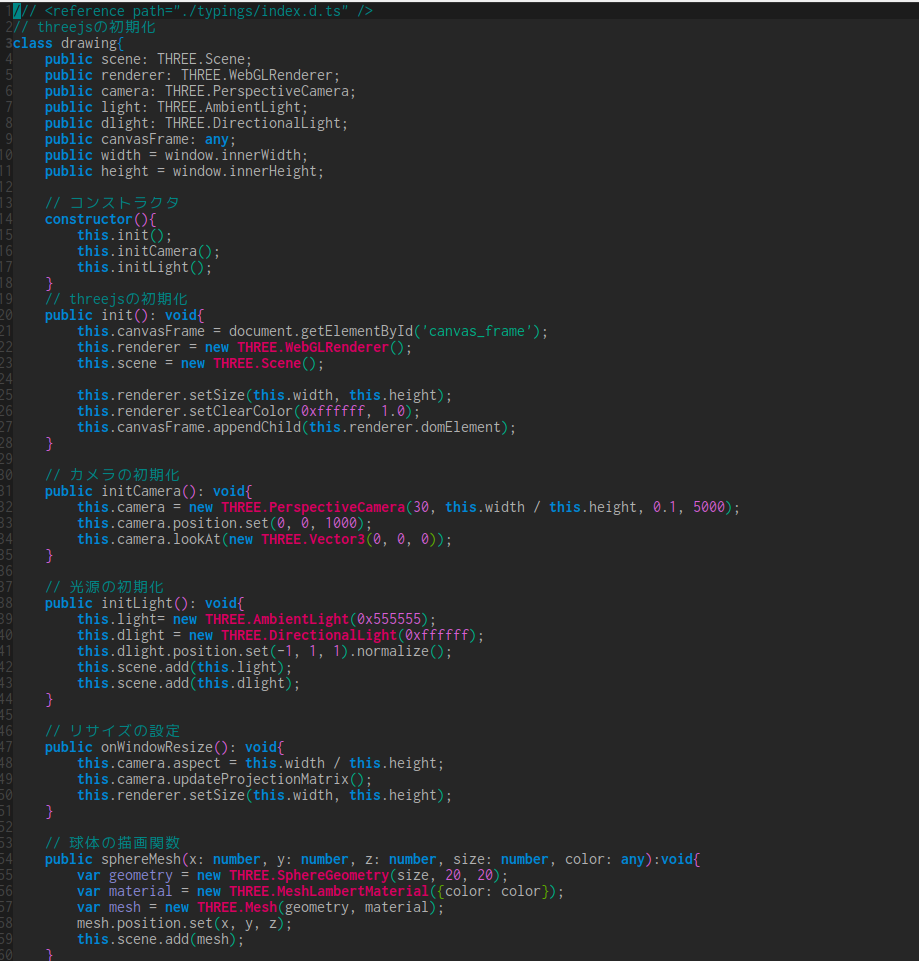

<!doctype html>
<html>
	<head>
		<meta charset="utf-8">
		<meta name="viewport" content="width=device-width, initial-scale=1.0, maximum-scale=1.0, user-scalable=no">

		<title>reveal.js</title>

		<link rel="stylesheet" href="css/reveal.css">
		<link rel="stylesheet" href="css/theme/night.css">

		<!-- Theme used for syntax highlighting of code -->
		<link rel="stylesheet" href="lib/css/zenburn.css">

		<!-- Printing and PDF exports -->
		<script>
			var link = document.createElement( 'link' );
			link.rel = 'stylesheet';
			link.type = 'text/css';
			link.href = window.location.search.match( /print-pdf/gi ) ? 'css/print/pdf.css' : 'css/print/paper.css';
			document.getElementsByTagName( 'head' )[0].appendChild( link );
		</script>

    <style type="text/css">
     .reveal h1,
     .reveal h2,
     .reveal h3,
     .reveal h4,
     .reveal h5,
     .reveal h6 {
         text-transform: none;
     }
    </style>
	</head>
	<body>
		<div class="reveal">
			<div class="slides">
          <section data-markdown=""
                   data-separator="^\n---$"
                   data-separator-vertical="^\n>>>$"
          >
              <script type="text/template">
                  # typescriptとthree.js
                  - - -
                  まのめっち

                  ---
                  ## 自己紹介
                  - - -
                  <li class="fragment">まのめっち</li>
                  <li class="fragment">13RD</li>
                  <li class="fragment">音楽もやってます</li>

                  ---
                  ## 最近のぼく
                  - - -
                  <li class="fragment">就活の終わり</li>
                  <li class="fragment">自分のサイトとか作った</li>
                  <li class="fragment">卒研がとってもjavascript</li>

                  ---
                  今回は卒研で詰まったところの話

                  ---
                  ## typescriptって？
                  - - -
                  <ul>
                      <li class="fragment">マイクロソフトが開発</li>
                      <li class="fragment">オープンソース</li>
                      <li class="fragment">es5の拡張版</li>
                      <ul>
                          <li class="fragment">コンパイルするとjavascriptになる</li>
                      </ul>
                  </ul>

                  ---
                  ## three.jsって？
                  - - -
                  <ul>
                      <li class="fragment">WebGLのwrapper
                      <ul>
                          <li class="fragment">ブラウザ上でOpenGLを扱うやつ
                          <li class="fragment">3Dの図形描画などが出来る
                      </ul>
                      <li class="fragment">描画の処理はGPUが担う
                      <ul>
                          <li class="fragment">Canvas2DはCPU
                      </ul>
                  </ul>

                  ---
                  ## 最初に思ったこと
                  - - -
                  ### ""めんどい""

                  ---
                  - 毎回コンパイルするの面倒
                  - three.js関連が全部エラーになる(標準じゃないから)
                  <li class="fragment">**キレた**</li>

                  ---
                  ## やったこと
                  - - -
                  - three.jsも正しくコンパイルする
                  - 自動コンパイル

                  ---
                  ## 外部ライブラリのエラーを防ぐ
                  - - -
                  typings.jsの活用で解決(これだけ)

                  ---
                  typingsコマンドで外部ライブラリ用の設定をDLするだけ!

                  ---
                  typescriptのコードの一行目に

                  おまじないの行を入れると完成

                  ---
                  ## 自動化
                  - - -
                  <h3 class="fragment">gulpを使う</h3>

                  ---
                  - 自動コンパイル
                  - 自動圧縮
                  ができちゃう

                  ---
                  ### gulp??? gruntじゃないの???
                  - - -
                  <li class="fragment">gruntとgulpはとても似てる</li>
                  <li class="fragment">gruntは直列、gulpは並列</li>
                  <li class="fragment">gulpでも直列処理は簡単に書ける</li>
                  <li class="fragment">gulpのほうが速い気がする</li>

                  ---
                  ## 実際に設定した動き
                  - - -
                  <ul>
                      <li class="fragment">ファイルの更新監視(gulp-watch)
                          <ul>
                              <li class="fragment">ファイルに変更が加えられると発動
                          </ul>
                          <li class="fragment">コンパイル(gulp-typescript)
                      <li class="fragment">コンパイルが終わり次第、圧縮(gulp-uglify)
                  </ul>

                  ---
                  ### 実際のコード
                  typescript

                  [ここにあります](https://github.com/asatake/slides/blob/gh-pages/pmobLT03/prog/main.ts)

                  

                  <!-- ~~~typescript
                       function hoge(){
                       var temp1:number = 1;
                       var temp2:string = "hello";
                       return temp1 + temp2;
                       }

                       var fuga:string = hoge();
                       console.log(fuga);
                       ~~~ -->

                  ---
                  ### 実際のコード
                  gulpのはたらきで変わり果てたjs

                  

                  <!-- ~~~javascript
                       function hoge(){var o=1,e="hello";return o+e}var fuga=hoge();console.log(fuga);
                       ~~~ -->

                  ---
                  ### three.jsで描画したやつ
                  [これ](http://asatake.github.io/slides/pmobLT03/prog/index.html)

                  

                  ---
                  ## まとめ
                  - - -
                  <p class="fragment">設定次第で楽しいtypescript生活</p>
                  <p class="fragment">Webやる人におすすめ！</p>

                  ---
                  ## ありがとうございました
                  - - -

                  github: asatake

                  Twitter: @Mano_tetsu
              </script>
          </section>
			</div>
		</div>

		<script src="lib/js/head.min.js"></script>
		<script src="js/reveal.js"></script>

		<script>
			// More info https://github.com/hakimel/reveal.js#configuration
			Reveal.initialize({
				history: true,

				// More info https://github.com/hakimel/reveal.js#dependencies
				dependencies: [
					{ src: 'plugin/markdown/marked.js' },
					{ src: 'plugin/markdown/markdown.js' },
					{ src: 'plugin/notes/notes.js', async: true },
					{ src: 'plugin/highlight/highlight.js', async: true, callback: function() { hljs.initHighlightingOnLoad(); } }
				]
			});
		</script>
	</body>
</html>
